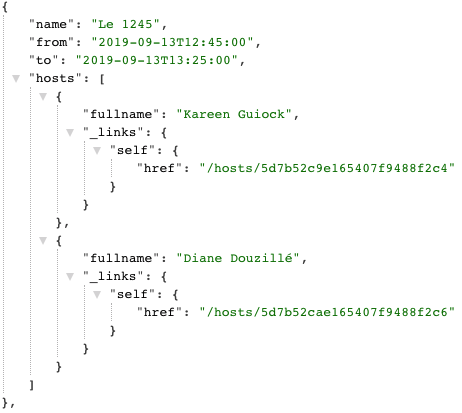

Navigation dans les services REST
Dans program, il y a un champs hosts qui représente la liste des présentateurs.
Nous allons rajouter un Controller qui permet de venir lire les informations concernant un présentateur.
Puis nous améliorerons notre ProgramController existant.
La classe du domaine Host
➤ Pour commencer créez la classe Host qui contient les données d'un présentateur :
@Document(collection = "host")
class Host {
@Id
String id
String firstname
String lastname
}HostRepository
➤ Puis créez un HostRepository à l'image du ProgramRepository
interface HostRepository extends MongoRepository<Host, String> {
// les méthodes findById et findAll sont déjà disponibles
}➤ Écrivez les tests save(), findAll() et findById()
@RunWith(SpringRunner)
@SpringBootTest
@ActiveProfiles('test')
class HostRepositoryTest {
@Autowired
HostRepository hostRepository
@Before
@After
void clean() {
hostRepository.deleteAll()
}
...
}HostController
➤ Mettez en place le HostController qui utilise ce repository et qui répond sur /hosts et /hosts/{id}
Pour la méthode qui renvoie un présentateur, vous pouvez utiliser la synthaxe suivante :
hostRepository.findById(id).orElseThrow({ new NotFoundException() })Avec la classe NotFoundException définie comme suit.
import org.springframework.http.HttpStatus
import org.springframework.web.bind.annotation.ResponseStatus
@ResponseStatus(value = HttpStatus.NOT_FOUND)
class NotFoundException extends RuntimeException {
NotFoundException() {
}
NotFoundException(String message) {
super(message)
}
NotFoundException(String message, Throwable throwable) {
super(message, throwable)
}
NotFoundException(Throwable throwable) {
super(throwable)
}
}
On pilote ici le code de retour grâce à l'annotation @ResponseStatus
(voir Using Spring @ResponseStatus to Set HTTP Status Code).
On obtient alors une 404 si l'id ne correspond à rien en base.
➤ Allez sur http://localhost:8080/hosts pour vérifier que tout fonctionne.
Fullname
On souhaiterait avoir le nom complet du présentateur directement dans le retour json.
Le plus simple est d'ajouter une méthode getFullname() sur la classe Host.
➤ Ajoutez cette méthode en commançant par écrire un test unitaire.
➤ Pensez aux cas aux limites, que faire si la personne n'a pas spécifié son nom de famille ou son prénom ?
Présentation
Jusqu'à présent, notre ProgramController présente notre modèle de données Program de façon assez brute.
La liste des présentateurs est la liste de leurs ids.
Nous allons plutôt y mettre le nom de ces personnes.
➤ Rajoutez les classes de présentation ProgramResource et HostResource
class ProgramResource {
String name
LocalDateTime from, to
List<HostResource> hosts = []
}class HostResource {
String fullname
}Ce modèle va servir à donner une meilleure tête à nos réponses dans les controllers.
Spring HATEOAS
Nous pourrions avancer sans aide extérieur pour débuter, mais comme nous allons vouloir mettre en place des liens dans notre json,
le mieux est d'aller chercher spring-hateoas dès à présent.
➤ Ajoutez la dépendance spring-boot-starter-hateoas au build.gradle (et pensez a rafraîchir votre projet dans intellij).
implementation 'org.springframework.boot:spring-boot-starter-hateoas'{kind=link}
Mise en place
➤ Pour commencer, ajouter l'annotation @EnableHypermediaSupport sur votre application.
import org.springframework.boot.autoconfigure.SpringBootApplication
import org.springframework.hateoas.config.EnableHypermediaSupport
@SpringBootApplication
@EnableHypermediaSupport(type = [EnableHypermediaSupport.HypermediaType.HAL])
class CoursecmApplication {
...
}Cela va activer tout le support pour ce que nous allons faire après.
Resources
➤ Ensuite, étendez ResourceSupport depuis les classes de resources
import org.springframework.hateoas.ResourceSupport
class HostResource extends ResourceSupport {
...
}import org.springframework.hateoas.ResourceSupport
class ProgramResource extends ResourceSupport {
...
}Cela va rajouter une liste de liens pour chacune de nos ressources.
Assemblers
Le rôle des Assemblers va être de convertir nos objets du domaine en resources.
➤ Les voici :
import com.monsite.coursecm.domain.Host
import com.monsite.coursecm.domain.HostResource
import org.springframework.hateoas.mvc.ResourceAssemblerSupport
import org.springframework.stereotype.Component
@Component
class HostResourceAssembler extends ResourceAssemblerSupport<Host, HostResource> {
HostResourceAssembler() {
super(HostController, HostResource)
}
@Override
HostResource toResource(Host entity) {
HostResource resource = instantiateResource(entity)
resource.fullname = entity.fullname // on ne prend que le fullname
resource
}
}import com.monsite.coursecm.domain.Program
import com.monsite.coursecm.domain.ProgramResource
import com.monsite.coursecm.repository.HostRepository
import org.springframework.beans.factory.annotation.Autowired
import org.springframework.hateoas.mvc.ResourceAssemblerSupport
import org.springframework.stereotype.Component
@Component
class ProgramResourceAssembler extends ResourceAssemblerSupport<Program, ProgramResource> {
@Autowired
HostRepository hostRepository
@Autowired
HostResourceAssembler hostResourceAssembler
ProgramResourceAssembler() {
super(ProgramController, ProgramResource)
}
@Override
ProgramResource toResource(Program entity) {
List<Host> hosts = entity.hosts.collect { hostRepository.findById(it).orElse(null) }.findAll()
ProgramResource resource = instantiateResource(entity)
resource.name = entity.name
resource.from = entity.from
resource.to = entity.to
resource.hosts = hostResourceAssembler.toResources(hosts) // conversion des hosts
resource
}
}Controllers
➤ Il ne reste plus que le ProgramController à mettre à jour.
@RestController
class ProgramController {
@Autowired
ProgramRepository programRepository
@Autowired
ProgramResourceAssembler programResourceAssembler
// il faut forcer le produces pour que cela donne du json dans un navigateur
@GetMapping(value = '/programs', produces = "application/json; charset=UTF-8")
Resources<ProgramResource> programs() {
LocalDate today = LocalDate.now()
LocalDateTime from = today.atStartOfDay()
LocalDateTime to = today.atStartOfDay().plusDays(1)
List<Program> programs = programRepository.findByToGreaterThanAndFromLessThan(from, to)
new Resources<>(programResourceAssembler.toResources(programs)) // conversion en resources
}
}Résultat
Si tout va bien, le résultat devrait être le suivant sur http://localhost:8080/programs :
{kind=link}
Les ids ont disparus et on ne voit que le fullname des présentateurs.
On a par contre des propriétés _embedded et programResourceList à la racine du json.
Cette structure permet de gérer les données, les éléments embeddés et les liens. Voir hal_specification.html

Navigation
Nous pouvons à présent rajouter un lien depuis la liste des programmes vers la resource du présentateur.
➤ Dans le HostResourceAssembler, on rajoute le lien, après l'affectation du fullname :
resource.fullname = entity.fullname
resource.add(new Link("/hosts/$entity.id"))Ce qui donne :
{kind=link}
➤ Faites de même pour le service sur /hosts
On conserve le /hosts/{id} en l'état afin d'avoir accès a toutes les données à cet endroit.
REST, HATEOAS et HAL
Rien n'oblige à faire du REST et encore moins du HATEOAS avec du HAL.
Cependant il existe peu de standards autour des web services. Connaitre ceux ci permet de ne pas réinventer la roue si possible.